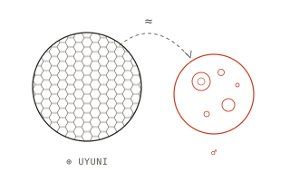
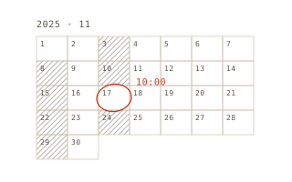

Cuatro proyectos en línea
Todos hechos en equipo. En cada uno cuento qué parte fue mía.
-

Lám. 1 — El Salar de Uyuni como análogo de Marte. Pacha-X
NASA Space Apps Challenge · sede Cochabamba
Mapea la Luna y Marte y conecta cada zona con sus análogos en la Tierra, para investigación y entrenamiento de astronautas. Pone en el mapa sitios de Bolivia como el Salar de Uyuni. Funciona en español e inglés.
- Mi parte
- Líder técnico. Arquitectura, modelo de datos en Supabase con seguridad por filas, curaduría de datos científicos, internacionalización, despliegue y el pitch ante el jurado.
- Stack
- React · TypeScript · Vite · Leaflet · globo 3D · Supabase · Vercel
-

Lám. 2 — Certificado verificable con código QR. AdmCursos UMSS
Universidad Mayor de San Simón
Gestiona cursos de principio a fin: oferta, grupos, docentes, preinscripciones, asistencia, reportes y certificados en PDF que se verifican con un código QR.
- Mi parte
- Arquitecto y full stack. Monorepo, base de datos PostgreSQL y migraciones, API REST, autenticación, módulo de certificados, endurecimiento de seguridad y despliegue.
- Stack
- React · Tailwind · Express · PostgreSQL · Drizzle ORM · Zod · PDFKit
-

Lám. 3 — La votación del grupo, contada a mano. Gustitos y Cafecitos
App social
Para decidir a dónde salir: armas un grupo, cada quien propone restaurantes y cafés, y votan. Invitaciones por código o enlace, notificaciones, panel de administración y recuperación de cuenta.
- Mi parte
- Full stack. Todo el backend con autenticación JWT, la lógica de grupos y votación, la interfaz en React y el CI/CD con GitHub Actions.
- Stack
- React 19 · TypeScript · Express 5 · MongoDB · JWT · GitHub Actions
-

Lám. 4 — La agenda de un técnico. Servineo
Marketplace de servicios
Conecta hogares de Cochabamba con técnicos calificados: búsqueda por ubicación, perfiles y agenda de citas en línea.
- Mi parte
- Módulo de agenda. Crear, editar y cancelar citas, calendario adaptable a móvil, reglas de disponibilidad horaria e integración con Google Calendar.
- Stack
- Next.js · TypeScript · Material UI · Express · MongoDB · Google Calendar API
Otros proyectos
Más chicos, o hechos para practicar algo concreto.
| Hoja | Proyecto | Qué es | Stack | Año |
|---|---|---|---|---|
| L·05 | SansiStore abrir ↗ | E-commerce universitario con pedidos, entregas y devoluciones. Hice el flujo de devoluciones, la validación geográfica de entregas y las pruebas end-to-end. | Astro · React · Firebase · Playwright | 2026 |
| L·06 | DevCV | Generador de CV y portafolio para desarrolladores: registro, experiencia, habilidades, integración con GitHub y reportes. | React · TypeScript · Tailwind | 2026 |
| L·07 | Recetitas | App instalable (PWA) para guardar recetas y ordenarlas por antojo. | React · Express · PWA | 2026 |
| L·08 | Punto de venta | Caja con promociones combinables y pago en efectivo, tarjeta o QR. Escrito con los patrones Factory, Decorator y Strategy. | Python · POO | 2026 |
| L·09 | API de autenticación | Usuarios, roles y autorización con JWT, servida sobre HTTPS y HTTP/2. | Node.js · Express · MongoDB | 2025 |
| L·10 | Gestión académica | Plataforma para institutos con paneles de administrador, docente y estudiante, inscripciones, descuentos y comprobantes de pago. | PHP · MySQL · JavaScript | 2025 |
La ruta hasta aquí
Cada punto es un hito, un trabajo o un curso. La altura no mide nada en particular: solo sube.
-
09Nov. 2026
Hackathon NASA Space Apps Challenge
Sede Cochabamba. Lideré al equipo que construyó Pacha-X.
-
08Ago. 2026
Speaker en Microsoft Tech Day Cochabamba
Di la charla «Power BI, Ciencia de Datos y Big Data» en la UMSS, con Microsoft Student Ambassadors. Recibí el certificado de speaker. Ver publicación ↗
-
07Ago. y oct. 2025
Operador del SIREPE
Tribunal Electoral Departamental, en el sistema de resultados preliminares de las Elecciones Generales 2025: primera y segunda vuelta.
-
06Ago. 2025 · 48 h
Ciberseguridad y prevención de ataques en servidores
Academia Tecnológica Génesis.
-
052025 – hoy
Desarrollador full stack
Productos web en equipos ágiles: Scrum, Git flow, revisión de código, CI/CD y despliegue continuo en Vercel, GitHub Pages y Render.
-
04Mar. – abr. 2025 · 130 h
Programación en Python
Universidad Pública de El Alto.
-
03Sep. – oct. 2024 · 320 h
Inglés, tres cursos seguidos
Basic and Intermediate English Course, 160 h (UMSS). Inglés Básico e Inglés Intermedio, 80 h cada uno (Sociedad Académica para el Desarrollo Educativo).
-
02En curso · 8.º semestre
Ingeniería Informática
Universidad Mayor de San Simón, Cochabamba.
-
012011 – 2022
Bachiller
Colegio Esclavas del Sagrado Corazón de Jesús.
Con qué trabajo
Y dónde lo usé, para que no sea solo una lista.
Frontend
- React
- Pacha-X, AdmCursos, Gustitos, SansiStore, DevCV, Recetitas
- TypeScript
- Pacha-X, Gustitos, Servineo, DevCV
- Next.js · Astro
- Servineo · SansiStore
- Tailwind · Material UI
- AdmCursos, DevCV · Servineo
- Leaflet
- Los mapas de Pacha-X
Backend y datos
- Node.js · Express
- AdmCursos, Gustitos, Servineo, Recetitas, API de autenticación
- PostgreSQL · Drizzle
- AdmCursos
- MongoDB
- Gustitos, Servineo, API de autenticación
- Supabase · Firebase
- Pacha-X · SansiStore
- JWT · Zod
- Gustitos, API de autenticación · AdmCursos
- Python · Power BI
- Punto de venta · la charla del Tech Day
- PHP · MySQL
- Gestión académica
Entrega y equipo
- Git · GitHub Actions
- Todos los proyectos · CI/CD de Gustitos
- Vercel
- Pacha-X, Servineo, SansiStore
- GitHub Pages
- AdmCursos, Gustitos
- Playwright
- Pruebas end-to-end de SansiStore
- Scrum · Git flow
- Trabajo en equipo, con revisión de código
- Cisco Packet Tracer
- Diseño y simulación de redes
Españolnativo
Inglésintermedio avanzado
Escríbeme
Para un proyecto, una charla o una pregunta. En español o en inglés.